| Nigel Bramwell, Mark & Sarah Lappin, and Hugh
Beeley (+ associated children) invited us to join them for a night of
camping at Chain of Lakes, about an hour Northeast of Houston. Luckily
for me, they had carefully selected the coldest night of the weekend!
We got off to a very late start, as Eric had to kick butt on his Brown Belt test first. Yes, he's now a Brown Belt in Tae Kwan Do! We arrived at the camp site around 11pm, just as our British friends were
thinking of heading for the tent. But, polite people that they are,
they stayed up for 3 more hours to entertain us. They kept us rolling
with all their funny stories, it was a great night. We also had very
aggressive raccoons to entertain us. Those little rascals were
stealing us blind while we sat right there. |
|
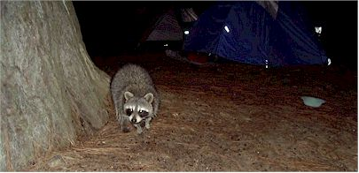 |
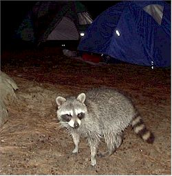 |
| Here's a couple shots of one of the more brave
ones. They had made a successful foray into the food bin earlier and
made off with the entire bag of marshmellows and a big bar of chocolate. So
much for our s'mores! They took the loot up into a tree and proceeded
to fight over it and pig out (pretty much the same reaction humans have to
chocolate.) |
|
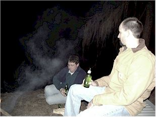 |
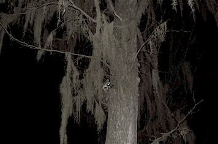 |
| Hugh and Eric swapping lies around the campfire | Another shot of one of the little devils up |
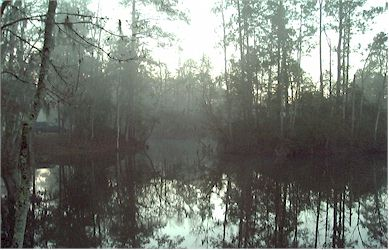 |
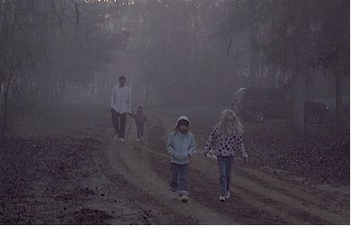 |
| Early (too early!) the next morning, looking out over the small lake where we had our tents set up. | Nigel and the girls, materializing out of the mist. Returning from a journey to the facilities. |
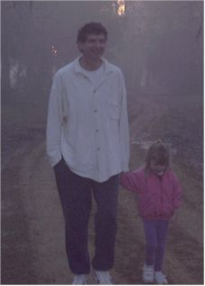 |
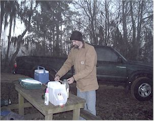 |
| Crazy Nigel - it was freezing cold and he didn't even have on a coat! | Eric, preparing hot water so that I can have some tea. He was hoping that would make me stop whining about being cold. |
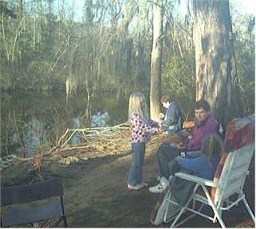 |
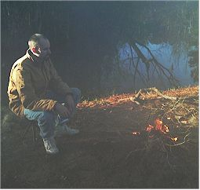 |
| Enjoying breakfast around the campfire. |
Eric built a fire and it kept us all amused for the morning. We had used all the firewood the night before, so he had to use the children as slave labor to gather more firewood. |
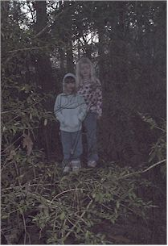 |
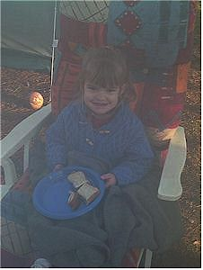 |
| A shot of the girls in their "secret" hiding place | Megan eating breakfast in the cushy chair |
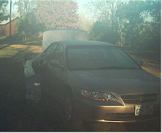 |
|
| A bad picture of Eleanor and Tom as they washed the entire car with tiny dish brushes. If you'd have told them to do it, they'd have complained to high heaven, but since it was their idea it kept them busy for hours! | |